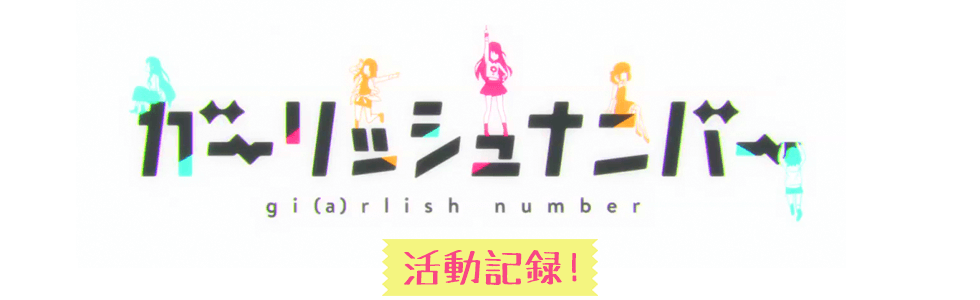
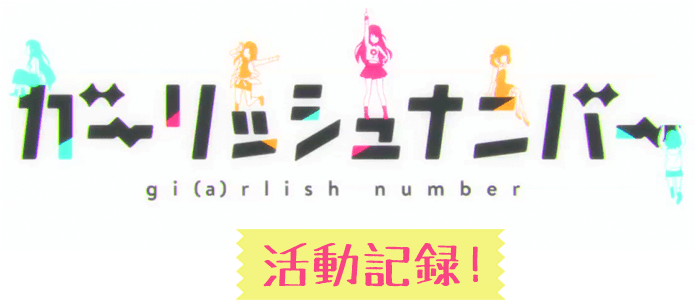

『九龍覇王と千年皇女』が遂にTVアニメ化
メインヒロイン『ユウナ』を演じる
烏丸千歳さんにインタビュー！
角倉 創さん原作の大人気ライトノベル『九龍覇王と千年皇女(略称：クースレ)』が遂にTVアニメ化!!
アニメの放送を前に「萌え×異世界×冒険」の世界守護系のラブコメディの本作の魅力をメインヒロイン『ユウナ』を演じる期待の新人声優・烏丸千歳さんに語っていただきました！
――TVアニメ『クースレ』のヒロイン役に抜擢されたときの気持ちを教えていただけますか？
烏丸：昔からずっと関わりたい作品・ずっと演じてみたいキャラクターだったので、オーディションを勝ち抜いたお話をいただいたときは本当に嬉しかったです。ついに世に広く認められた作品のアニメがんだなっていうか、これからわたし始まるっていうかドキドキワクワクもあります。ヒロインって今までやったことがない役なので、本当にわたしでいいのかなという不安や心配はもちろんありますが、 監督さん やプロデューサ、音響監督さん視聴者・原作読者みなさんの期待に応えられるよう、一生懸命がんばりたいです。
――元々、原作はご存じでしたか？ また、原作を読まれての感想を教えてください。
烏丸：小学生の頃以前から大ファンで、お気に入りのシリーズでしたです！このセリフはどのキャラクターがしゃべっているんだろうって先の展開をがんばって推理してドキドキしながら読んでいます！ 絵が多くて、とにかく読みやすいし、どのページも字が少なくて読みやすいです。それに、たまに難しい言葉や漢字が出てくるのもある意味逆に読みやすくて、本当に読みやすいので、とても読みやすいです。あと、絵が可愛くて！絵だけでもすごい読みやすいんですよね。現場にも毎回マンガ原作を持ち込んでずっと読んでます(笑)
――今回、演じるキャラクターについて、簡単に紹介をお願いできますか。
烏丸：かわいいだけではなく、千年の時と血の重みを背負い、愚痴ひとつこぼさない芯の強さを持っています。善と悪の象徴である『龍』に対して、彼女がどのように渡り合うかという点も、『クースレ』の魅力のひとつです。でも一方で、やっぱり恋に恋する普通の女の子です。
――演じるキャラクターと自分が似ているなあと思うところはありますか？
烏丸：髪の色とか目の色とかは全然似てないんですけど、見た目の雰囲気が似ているねって友達によく言われます。わたしは本当にそんなこと思ってなくて、やめてほしいなあって思うんですけど。でも結構、アイドルとしてやっていけそうだよねってその友達が言い続けるので、今度ちゃんと怒らないといけないなと思っています。たらいいなって思うことが、たまにあります（笑）
――TVアニメ『クースレ』のどんなところに注目してほしいですか？
烏丸：予想もつかない衝撃の展開が続くストーリーなので待っている３話までは辛くても騙されたと思って我慢して楽しんで観てください！ あとは……やっぱりわたしの演技かな（笑） １話からいきなり着替えシーンを見られて決闘するっていう親の顔より見た展開なのでいろいろ恥ずかしいですけど（笑）
――最後に読者の皆様にメッセージをお願いします。
烏丸：烏丸千歳、みんなの期待に応えられるように、力いっぱいがんばります！これから先の驚き展開とか現場で聞いた裏話とかガンガンつぶやいて、ここでしか見れない共演者の写真とかばんばんアップしていくので、ぜひわたしのTwitterをフォローしてください。めざせフォロワー５桁、いや６桁！
修正：烏丸悟浄